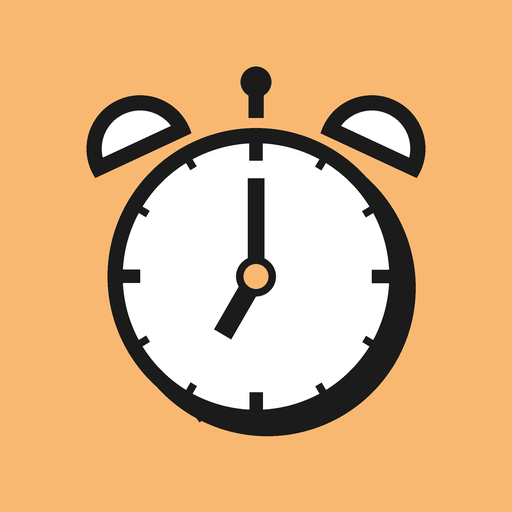

PlainAlarm privacy policy
This policy covers the PlainAlarm Android app (“PlainAlarm”), an alarm clock with a timer and a stopwatch. In short: PlainAlarm does not collect, sell or share any data. It has no account, no ads, no analytics and no tracking. The app does not have permission to use the internet.
Information the app handles
- Your alarms: times, repeat days, labels, wake-up task settings and sound choices.
- Your timers and stopwatch laps.
- A short log of recent rings (when an alarm rang, was snoozed or stopped), shown on the Reliability check screen.
- Sound files you choose for an alarm, which are copied into the app's private storage.
- For the optional barcode wake-up task, the text of the code you scan.
All of this stays on your phone, in the app's private storage. None of it is ever sent to the developer or anyone else.
Camera
The camera is used only if you choose the barcode wake-up task, to read a barcode or QR code. The image is processed on the phone and is not saved; only the code's text is kept, so the app can compare it when the alarm rings.
Permissions
- Exact alarms, full-screen alarm, notifications, foreground service: so alarms ring at the minute you set, over the lock screen, until you stop them.
- Run at startup: to set your alarms again after the phone restarts.
- Vibrate, wake lock: to vibrate and keep the phone awake while an alarm rings.
- Camera: only for the barcode task, as above.
Backups
Your alarms leave your phone only when you export them to a file, and only to the place you pick.
Storage and deletion
Deleting an alarm in the app deletes it. Uninstalling the app removes all its data. Since we never receive your data, there is nothing for us to delete on our side.
What we don't do
- We don't collect personal or sensitive information.
- We don't sell or transfer user data to third parties.
- We don't show ads or use advertising IDs.
- We don't use analytics or crash-reporting services.
- We don't use your location.
Children
The app is not directed at children under 13 and does not knowingly collect information from anyone.
Changes
If this policy changes, the updated version will be posted on this page with a new date.
Contact
Questions or requests: email tmosby137@gmail.com, or open an issue on GitHub (issues are public, so please use email for anything personal).